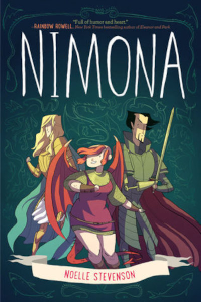

Nimona
Noelle Stevenson
An epic fantasy graphic novel that focuses on the bad guys and turns the concept of good and evil on its head. Sir Ballister Blackheart is the kingdom’s villain with a vendetta who prefers to follow the rules. One day a young girl shows up at his lair claiming to be his new sidekick, and she is enthusiastically looking to wreak havoc. It turns out this girl (Nimona) has powerful shapeshifting abilities, and it isn’t long before Blackheart takes her in and they become a supervillain duo. Their main objective is to expose his arch nemesis Sir Ambrosius Goldenloin and the Institution of Law Enforcement and Heroics what they truly are to the public, but as Nimona becomes more reckless Blackheart starts to question what the young shape-shifter is hiding.
I finished this story in two days, I could not put it down. The story gets a bit convoluted near the end in regards to Nimona’s past. By the end of the book I had more questions; I’m hoping that Noelle Stevenson will write a follow up for her work. Unanswered questions and murky details aside, I love the relationships between each of the main characters, which is the main selling point of this novel. The banter between Nimona and Ballister Blackheart is absolutely hilarious, and the interactions and chemistry between Blackheart and Goldenloin (best friends turned enemies) were believable. Also, love the world Stevenson has created, a sort of pseudo-medieval society where science and magic merge. Most times medieval fantasy settings are rendered in one of two ways: dark and gritty or overly romanticized. Rather than go for one or the other, Stevenson creates a unique world that blends the charm of a medieval society with a few modern conveniences. This was a fun read that was hilarious in some parts, heartbreaking in others; I can’t say it enough, Nimona was enjoyable.
{kind=link}